数据库
相关链接：
一、数据库基础
1.1 数据库, 数据库管理系统, 数据库系统, 数据库管理员
这四个概念描述了从数据本身到管理整个体系的不同层次，我们常用一个图书馆的例子来把它们串联起来理解。
- 数据库 (Database - DB): 它就像是图书馆里，书架上存放的所有书籍和资料。从技术上讲，数据库就是按照一定数据模型组织、描述和储存起来的、可以被各种用户共享的结构化数据的集合。它就是我们最终要存取的核心——信息本身。
- 数据库管理系统 (Database Management System - DBMS): 它就像是整个图书馆的管理系统，包括图书的分类编目规则、借阅归还流程、安全检查系统等等。从技术上讲，DBMS 是一种大型软件，比如我们常用的 MySQL、Oracle、PostgreSQL 软件。它的核心职责是科学地组织和存储数据、高效地获取和维护数据；为我们屏蔽了底层文件操作的复杂性，提供了一套标准接口（如 SQL）来操纵数据，并负责并发控制、事务管理、权限控制等复杂问题。
- 数据库系统 (Database System - DBS): 这是一个更大的概念，不仅包括书(DB)和管理系统(DBMS)，还包括了硬件、应用和使用的人。
- 数据库管理员 (Database Administrator - DBA ): 他就是图书馆的馆长，负责整个数据库系统正常运行。他的职责非常广泛，包括数据库的设计、安装、监控、性能调优、备份与恢复、安全管理等等，确保整个系统的稳定、高效和安全。
1.2 DBMS 的四大核心功能
- 数据定义： 这是 DBMS 的基础。它提供了一套数据定义语言（Data Definition Language - DDL），让我们能够创建、修改和删除数据库中的各种对象。这不仅仅是定义表的结构（比如字段名、数据类型），还包括定义视图、索引、触发器、存储过程等。
- 数据操作： 这是我们作为开发者日常使用最多的功能。它提供了一套数据操作语言（Data Manipulation Language - DML），核心就是我们熟悉的增、删、改、查（CRUD）操作。它让我们能够方便地对数据库中的数据进行操作和检索。
- 数据控制： 这是保证数据正确、安全、可靠的关键。通常包含并发控制、事务管理、完整性约束、权限控制、安全性限制等功能。
- 数据库维护： 这部分功能是为了保障数据库系统的长期稳定运行。它包括了数据的导入导出、数据库的备份与恢复、性能监控与分析、以及系统日志管理等。
1.3 DBMS 的类型
- 关系型数据库：除了我们最常用的关系型数据库（RDBMS），比如 MySQL（开源首选）、PostgreSQL（功能最全）、Oracle（企业级），它们基于严格的表结构和 SQL，非常适合结构化数据和需要事务保证的场景，例如银行交易、订单系统。
- NoSQL 数据库：它们的共同特点是为了极致的性能和水平扩展能力，在某些方面（通常是事务）做了妥协。
- 键值数据库：如 Redis，适合缓存、会话存储等。
- 文档数据库：如 MongoDB，适合半结构化文档（比如 JSON/BSON）的存储和查询。
- 列式数据库：如 Cassandra、HBase，适合大规模数据存储和查询。
- 图形数据库：如 Neo4j，适合关系复杂、查询路径的场景。
- NewSQL 数据库：分布式关系型数据库。不仅具有 NoSQL 对海量数据的存储管理能力，还保持了传统数据库支持 ACID 和 SQL 等特性。
1.4 关系型数据库核心概念

基础概念：
- 元组（Tuple）： 元组是关系数据库中的基本单位，在二维表中对应一行记录。每个元组包含了一个实体的完整信息。例如，在学生表中，每个学生的完整信息（学号、姓名、年龄等）构成一个元组。
- 码（Key）： 码是能够唯一标识关系中元组的一个或多个属性的集合。码的主要作用是保证数据的唯一性和完整性。
码的分类：
- 候选码（Candidate Key）： 候选码是能够唯一标识元组的最小属性集合，其任何真子集都不能唯一标识元组。一个关系可能有多个候选码。例如，在学生表中，如果"学号"能唯一标识学生，同时"身份证号"也能唯一标识学生，那么{学号}和{身份证号}都是候选码。
- 主码/主键（Primary Key）： 主码是从候选码中选择的一个，用于唯一标识关系中的元组。每个关系只能有一个主码，但可以有多个候选码。选择主码时通常考虑：简单性、稳定性、无业务含义等因素。
- 外码/外键（Foreign Key）： 外码是一个关系中的属性或属性组，它对应另一个关系的主码。外码用于建立和维护两个关系之间的联系，是实现参照完整性的重要机制。例如，在选课表中的"学号"如果引用学生表的主码"学号"，则选课表中的"学号"就是外码。
属性分类：
- 主属性（Prime Attribute）： 主属性是包含在任何一个候选码中的属性。如果一个关系有多个候选码，那么这些候选码中出现的所有属性都是主属性。例如，工人关系（工号，身份证号，姓名，性别，部门）中，如果{工号}和{身份证号}都是候选码，那么"工号"和"身份证号"都是主属性。
- 非主属性（Non-prime Attribute）： 非主属性是不包含在任何候选码中的属性。这些属性完全依赖于候选码来确定其值。在上述工人关系中，"姓名"、"性别"、"部门"都是非主属性。
1.5 ER 图
我们做一个项目的时候一定要试着画 ER 图来捋清数据库设计，
ER 图：全称是 Entity Relationship Diagram（实体联系图），提供了表示实体类型、属性和联系的方法。
ER 图的 3 个要素：
- 实体：通常是现实世界的业务对象，当然使用一些逻辑对象也可以。比如对于一个校园管理系统，会涉及学生、教师、课程、班级等等实体。在 ER 图中，实体使用矩形框表示。
- 属性：即某个实体拥有的属性，属性用来描述组成实体的要素，对于产品设计来说可以理解为字段。在 ER 图中，属性使用椭圆形表示。
- 联系：即实体与实体之间的关系，在 ER 图中用菱形表示，这个关系不仅有业务关联关系，还能通过数字表示实体之间的数量对照关系。例如，一个班级会有多个学生就是一种实体间的联系。
实体间的关系：
- 多对多（M: N）
- 1 对 1（1:1）
- 1 对多（1: N）
1.6 数据库范式
数据库范式有 3 种：
- 1NF(第一范式)：属性不可再分。
- 2NF(第二范式)：1NF 的基础之上，消除了非主属性对于码的部分函数依赖。
- 3NF(第三范式)：3NF 在 2NF 的基础之上，消除了非主属性对于码的传递函数依赖 。
1NF(第一范式)
属性（对应于表中的字段）不能再被分割，也就是这个字段只能是一个值，不能再分为多个其他的字段了。
1NF 是所有关系型数据库的最基本要求 ，也就是说关系型数据库中创建的表一定满足第一范式。
2NF(第二范式)
2NF 在 1NF 的基础之上，消除了非主属性对于码的部分函数依赖。
第二范式在第一范式的基础上增加了一个列，这个列称为主键，非主属性都依赖于主键。
一些重要的概念：
- 函数依赖（functional dependency）：若在一张表中，在属性（或属性组）X 的值确定的情况下，必定能确定属性 Y 的值，那么就可以说 Y 函数依赖于 X，写作 X → Y。
- 部分函数依赖（partial functional dependency）：如果 X→Y，并且存在 X 的一个真子集 X0，使得 X0→Y，则称 Y 对 X 部分函数依赖。比如学生基本信息表 R 中（学号，身份证号，姓名）当然学号属性取值是唯一的，在 R 关系中，（学号，身份证号）->（姓名），（学号）->（姓名），（身份证号）->（姓名）；所以姓名部分函数依赖于（学号，身份证号）；
- 完全函数依赖(Full functional dependency)：在一个关系中，若某个非主属性数据项依赖于全部关键字称之为完全函数依赖。比如学生基本信息表 R（学号，班级，姓名）假设不同的班级学号有相同的，班级内学号不能相同，在 R 关系中，（学号，班级）->（姓名），但是（学号）->(姓名)不成立，（班级）->(姓名)不成立，所以姓名完全函数依赖与（学号，班级）；
- 传递函数依赖：在关系模式 R(U)中，设 X，Y，Z 是 U 的不同的属性子集，如果 X 确定 Y、Y 确定 Z，且有 X 不包含 Y，Y 不确定 X，（X∪Y）∩Z=空集合，则称 Z 传递函数依赖(transitive functional dependency) 于 X。传递函数依赖会导致数据冗余和异常。传递函数依赖的 Y 和 Z 子集往往同属于某一个事物，因此可将其合并放到一个表中。比如在关系 R(学号 , 姓名, 系名，系主任)中，学号 → 系名，系名 → 系主任，所以存在非主属性系主任对于学号的传递函数依赖。
3NF(第三范式)
在 2NF 的基础之上，消除了非主属性对于码的传递函数依赖。
符合 3NF 要求的数据库设计，基本上解决了数据冗余过大，插入异常，修改异常，删除异常的问题。
比如在关系 R(学号 , 姓名, 系名，系主任)中，学号 → 系名，系名 → 系主任，所以存在非主属性系主任对于学号的传递函数依赖，所以该表的设计，不符合 3NF 的要求。
1.7 不推荐使用外键与级联
- 增加了复杂性
- 增加了额外工作
- 对分库分表不友好
- ……
1.8 不推荐使用存储过程
- 调试困难
- 移植性差
- 占用数据库资源
- 版本管理困难
1.x 数据库设计的步骤

二、NoSQL 基础
2.1 NoSQL 数据库的定义
NoSQL（Not Only SQL 的缩写）泛指非关系型的数据库，主要针对的是键值、文档以及图形类型数据存储。
并且，NoSQL 数据库天生支持分布式，数据冗余和数据分片等特性，旨在提供可扩展的高可用高性能数据存储解决方案。
NoSQL 数据库可以存储关系型数据，不过它们与关系型数据库的存储方式不同。
NoSQL 数据库代表：HBase、Cassandra、MongoDB、Redis。
2.2 NoSQL 数据库的优势
NoSQL 数据库非常适合许多现代应用程序，例如移动、Web 和游戏等应用程序，它们需要灵活、可扩展、高性能和功能强大的数据库以提供卓越的用户体验。
2.3 NoSQL 数据库的类型
- 键值：键值数据库是一种较简单的数据库，其中每个项目都包含键和值。这是极为灵活的 NoSQL 数据库类型，因为应用可以完全控制 value 字段中存储的内容，没有任何限制。Redis 和 DynanoDB 是两款非常流行的键值数据库。
- 文档：文档数据库中的数据被存储在类似于 JSON（JavaScript 对象表示法）对象的文档中，非常清晰直观。每个文档包含成对的字段和值。这些值通常可以是各种类型，包括字符串、数字、布尔值、数组或对象等，并且它们的结构通常与开发者在代码中使用的对象保持一致。MongoDB 就是一款非常流行的文档数据库。
- 图形：图形数据库旨在轻松构建和运行与高度连接的数据集一起使用的应用程序。图形数据库的典型使用案例包括社交网络、推荐引擎、欺诈检测和知识图形。Neo4j 和 Giraph 是两款非常流行的图形数据库。
- 宽列：宽列存储数据库非常适合需要存储大量的数据。Cassandra 和 HBase 是两款非常流行的宽列存储数据库。

三、SQL 语法
3.1 数据库术语
- 数据库（database） - 保存有组织的数据的容器（通常是一个文件或一组文件）。
- 数据表（table） - 某种特定类型数据的结构化清单。
- 模式（schema） - 关于数据库和表的布局及特性的信息。模式定义了数据在表中如何存储，包含存储什么样的数据，数据如何分解，各部分信息如何命名等信息。数据库和表都有模式。
- 列（column） - 表中的一个字段。所有表都是由一个或多个列组成的。
- 行（row） - 表中的一个记录。
- 主键（primary key） - 一列（或一组列），其值能够唯一标识表中每一行。
3.2 SQL 语法
SQL 语法结构：
- 子句：是语句和查询的组成成分。（在某些情况下，这些都是可选的。）
- 表达式：可以产生任何标量值，或由列和行的数据库表
- 谓词：给需要评估的 SQL 三值逻辑（3VL）（true/false/unknown）或布尔真值指定条件，并限制语句和查询的效果，或改变程序流程。
- 查询：基于特定条件检索数据。这是 SQL 的一个重要组成部分。
- 语句：可以持久地影响纲要和数据，也可以控制数据库事务、程序流程、连接、会话或诊断。
SQL 语法要点：
- SQL 语句不区分大小写，但是数据库表名、列名和值是否区分，依赖于具体的 DBMS 以及配置。例如：
SELECT与select、Select是相同的。 - 多条 SQL 语句必须以分号（;）分隔。
- 处理 SQL 语句时，所有空格都被忽略。
SQL 语句可以写成一行，也可以分写为多行：
-- 一行 SQL 语句
UPDATE user SET username='robot', password='robot' WHERE username = 'root';
-- 多行 SQL 语句
UPDATE user
SET username='robot', password='robot'
WHERE username = 'root';
SQL 支持三种注释：
## 注释1
-- 注释2
/* 注释3 */
3.3 SQL 分类
3.3.1 数据定义语言（DDL）
数据定义语言（Data Definition Language，DDL）是 SQL 语言集中负责数据结构定义与数据库对象定义的语言。
DDL 的主要功能是定义数据库对象。
DDL 的核心指令是 CREATE、ALTER、DROP
3.3.2 数据操纵语言（DML）
数据操纵语言（Data Manipulation Language, DML）是用于数据库操作，对数据库其中的对象和数据运行访问工作的编程语句。
DML 的主要功能是 访问数据，因此其语法都是以读写数据库为主。
DML 的核心指令是 INSERT、UPDATE、DELETE、SELECT。这四个指令合称 CRUD(Create, Read, Update, Delete)，即增删改查。
3.3.3 事务控制语言（TCL）
事务控制语言 (Transaction Control Language, TCL) 用于管理数据库中的事务。
用于管理由 DML 语句所做的更改。它还允许将语句分组为逻辑事务。
TCL 的核心指令是 COMMIT、ROLLBACK
3.3.4 数据控制语言（DCL）
数据控制语言 (Data Control Language, DCL) 是一种可对数据访问权进行控制的指令，它可以控制特定用户账户对数据表、查看表、预存程序、用户自定义函数等数据库对象的控制权。
DCL 的核心指令是 GRANT、REVOKE。
DCL 以控制用户的访问权限为主，因此其指令作法并不复杂，可利用 DCL 控制的权限有：CONNECT、SELECT、INSERT、UPDATE、DELETE、EXECUTE、USAGE、REFERENCES。
根据不同的 DBMS 以及不同的安全性实体，其支持的权限控制也有所不同。
3.4 增删改查
我们先来介绍 DML 语句用法。 DML 的主要功能是读写数据库实现增删改查。
3.4.1 插入数据
INSERT INTO 语句用于向表中插入新记录。
# 插入一行
INSERT INTO user
VALUES (10, 'root', 'root', 'xxxx@163.com');
# 插入多行
INSERT INTO user
VALUES (10, 'root', 'root', 'xxxx@163.com'), (12, 'user1', 'user1', 'xxxx@163.com'), (18, 'user2', 'user2', 'xxxx@163.com');
# 插入行的一部分
INSERT INTO user(username, password, email)
VALUES ('admin', 'admin', 'xxxx@163.com');
# 插入查询出来的数据
INSERT INTO user(username)
SELECT name
FROM account;
3.4.2 更新数据
UPDATE 语句用于更新表中的记录。
UPDATE user
SET username='robot', password='robot'
WHERE username = 'root';
3.4.3 删除数据
DELETE 语句用于删除表中的记录。
TRUNCATE TABLE 可以清空表，也就是删除所有行。说明：TRUNCATE 语句不属于 DML 语法而是 DDL 语法。
# 删除表中的指定数据
DELETE FROM user
WHERE username = 'robot';
# 清空表中的数据
TRUNCATE TABLE user;
3.4.4 查询数据
SELECT 语句用于从数据库中查询数据。
DISTINCT 用于返回唯一不同的值。它作用于要 SELECT 的所有列，也就是说所有列的值都相同才算相同。DISTINCT 通常用于去重。
LIMIT 限制返回的行数。可以有两个参数，第一个参数为起始行，从 0 开始；第二个参数为返回的总行数。
- ASC：升序（默认）
- DESC：降序
# 查询单列
SELECT prod_name
FROM products;
# 查询多列
SELECT prod_id, prod_name, prod_price
FROM products;
# 查询所有列
SELECT *
FROM products;
# 查询不同的值
SELECT DISTINCT vend_id
FROM products;
# 限制查询结果
-- 返回前 5 行
SELECT * FROM mytable LIMIT 5;
SELECT * FROM mytable LIMIT 0, 5;
-- 返回第 3 ~ 5 行
SELECT * FROM mytable LIMIT 2, 3;
3.5 排序
order by 用于对结果集按照一个列或者多个列进行排序。默认按照升序对记录进行排序，如果需要按照降序对记录进行排序，可以使用 DESC 关键字。
order by 对多列排序的时候，先排序的列放前面，后排序的列放后面。并且，不同的列可以有不同的排序规则。
SELECT * FROM products
ORDER BY prod_price DESC, prod_name ASC;
3.6 分组
group by：
group by子句将记录分组到汇总行中。group by为每个组返回一个记录。group by通常还涉及聚合count，max，sum，avg等。group by可以按一列或多列进行分组。group by按分组字段进行排序后，order by可以以汇总字段来进行排序。
# 分组
SELECT cust_name, COUNT(cust_address) AS addr_num
FROM Customers GROUP BY cust_name;
# 分组后排序
SELECT cust_name, COUNT(cust_address) AS addr_num
FROM Customers GROUP BY cust_name
ORDER BY cust_name DESC;
having：
having用于对汇总的group by结果进行过滤。having一般都是和group by连用。where和having可以在相同的查询中。
使用 WHERE 和 HAVING 过滤数据：
SELECT cust_name, COUNT(*) AS NumberOfOrders
FROM Customers
WHERE cust_email IS NOT NULL
GROUP BY cust_name
HAVING COUNT(*) > 1;
having vs where：
where：过滤指定的行，后面不能加聚合函数（分组函数）。where在group by前。having：过滤分组，一般都是和group by连用，不能单独使用。having在group by之后
3.7 子查询
子查询是嵌套在较大查询中的 SQL 查询，也称内部查询或内部选择，包含子查询的语句也称为外部查询或外部选择。
简单来说，子查询就是指将一个 select 查询（子查询）的结果作为另一个 SQL 语句（主查询）的数据来源或者判断条件。
子查询可以嵌入 SELECT、INSERT、UPDATE 和 DELETE 语句中，也可以和 =、<、>、IN、BETWEEN、EXISTS 等运算符一起使用。
子查询常用在 WHERE 子句和 FROM 子句后边：
- 当用于
WHERE子句时，根据不同的运算符，子查询可以返回单行单列、多行单列、单行多列数据。子查询就是要返回能够作为WHERE子句查询条件的值。 - 当用于
FROM子句时，一般返回多行多列数据，相当于返回一张临时表，这样才符合FROM后面是表的规则。这种做法能够实现多表联合查询。
用于 WHERE 子句的子查询的基本语法如下：
select column_name [, column_name ]
from table1 [, table2 ]
where column_name operator
(select column_name [, column_name ]
from table1 [, table2 ]
[where])